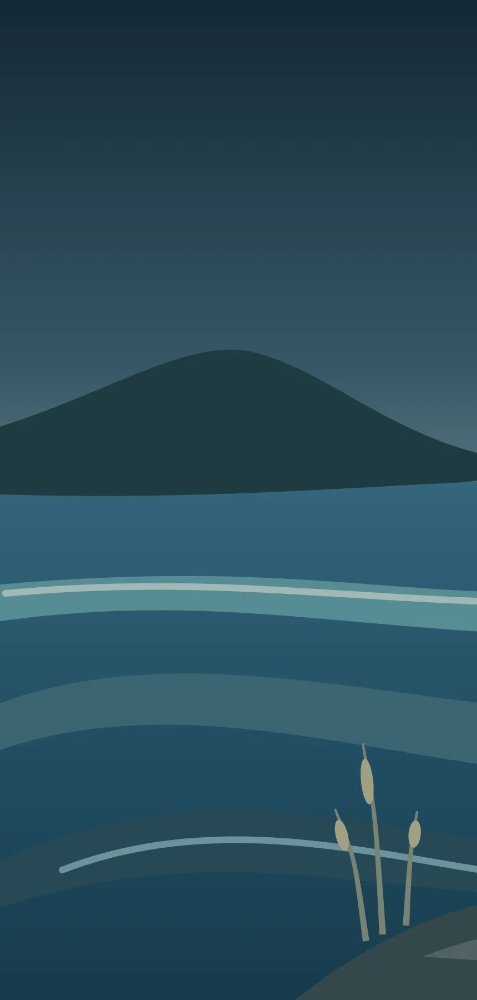
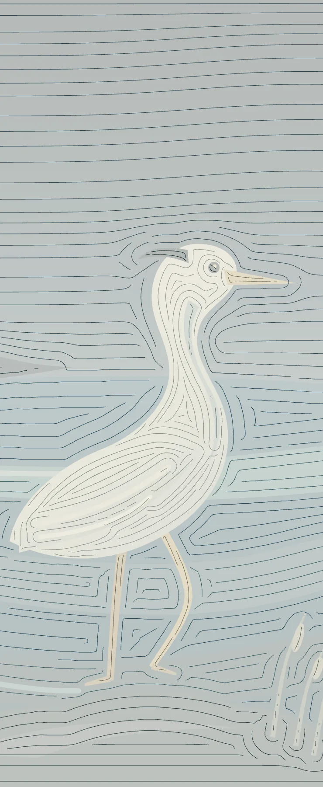
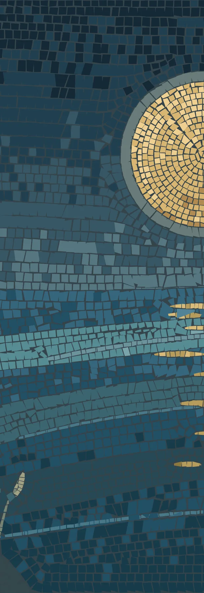
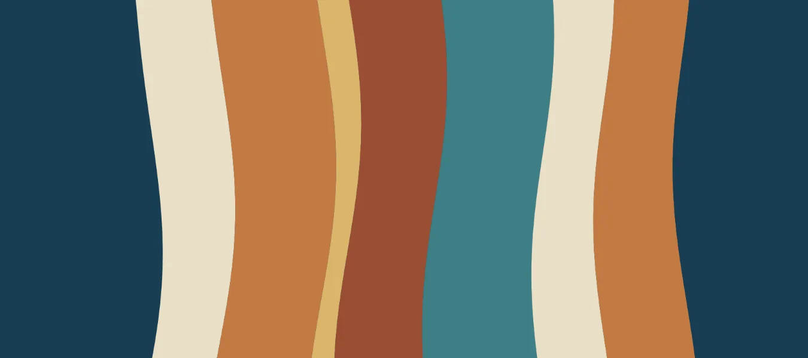
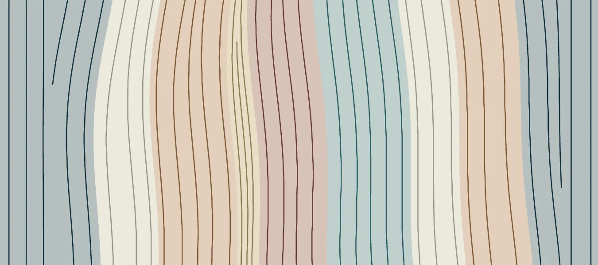
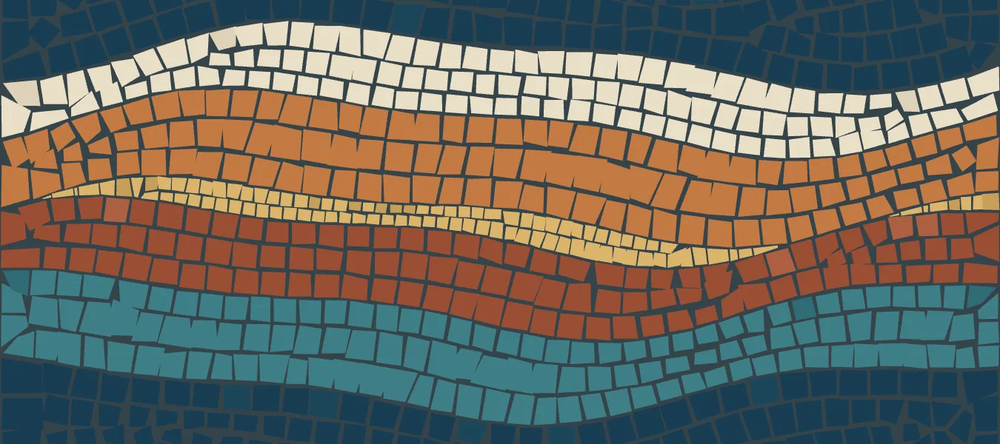

mosAIc, from a prompt to stone
Better viewed on a desktop
mosAIc is an open mosaic engine and the agent skill that lays it. Your coding agent draws a picture, a film, or a whole page, and the engine cuts it into thousands of stones of glass, marble, and gold, sets them in mortar, and lights each one. This page is one of its walls, cut in your browser around the words you are reading.
Give your agent the skill Try the studio
The source is on GitHub, under the MIT License.
The name in stone. Cutting the stones in your browser.
How a drawing becomes a wall



I Draw
A scene is a few flat regions in code, each with its material and stone size.
II Flow
Courses follow every edge at an even spacing. Mosaicists call this andamento.
III Cut
Each course is cut into stones a little smaller than their cells, so mortar shows.
IV Light
Each stone gets a thickness, a bevel, and a tilt of its own, so the light catches them one at a time.
Draw

Flow

Cut

Light
Eight materials
Glass
Gold
Silver
Marble
Glass
Smalti with a broken face and the odd bubble.
Gold
Leaf under a thin glass skin, softly hammered.
Silver
The same leaf, cooler.
Marble
A fine grain and a soft sheen.
Basalt
Limestone
Terracotta
Light
Basalt
Dark and dense, with a rare glint.
Limestone
Matte, pitted, and quiet.
Terracotta
Fired clay, warmer in its hollows.
Light
Glass that glows from inside, for lamps and windows.
Gallery
Odyssey lantern
Film, 26 s · about 18,000 stones · the sketchbook piece the engine began in
About eighteen thousand stones, laid outward from a lantern with the border last. The engine began in this piece.
Arrakis
Film, 26 s · four scenes flowing into each other · made with mosAIc
A desert planet in four pictures of stone: a night under two moons, spice at dawn, the worm, and a city at dusk. Each flows into the next, out from its subject.
The road home
Film, 36 s · from the sketchbook, on an earlier engine
From a round door in the hill to the mountain of fire and home again. Made with an earlier version of the engine.
Copper leaf
Still · 5,250 stones · by Codex with the skill
Given a copy of the skill, the agent wrote the scene as code, rendered it from the command line, and inspected the result before showing it.
From moon to morning
Film, 10 s · 17,387 stones · a mosAIc example
A ten-second film in two scenes. The night's stones lift off the wall and resettle as a coastal dawn. Scrub it in the studio.
Gold crescent
Still · 7,340 stones · by Claude Code with the skill
Gold crescent over jade waves. The agent wrote the scene, rendered it, and checked the picture before showing it.
Studio
Drop an image here, or pick one below.
Your images stay in your browser.